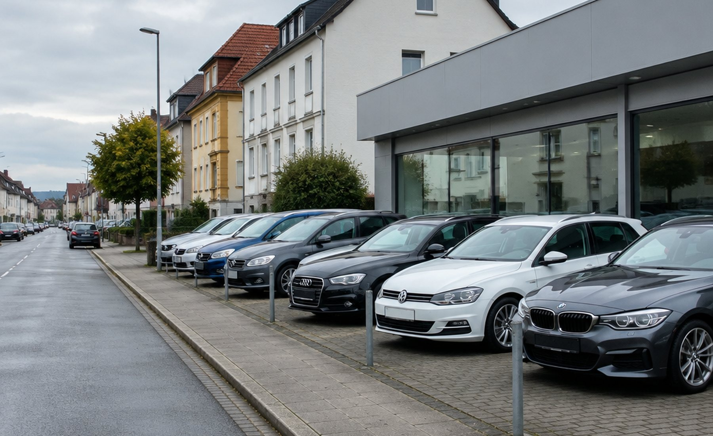
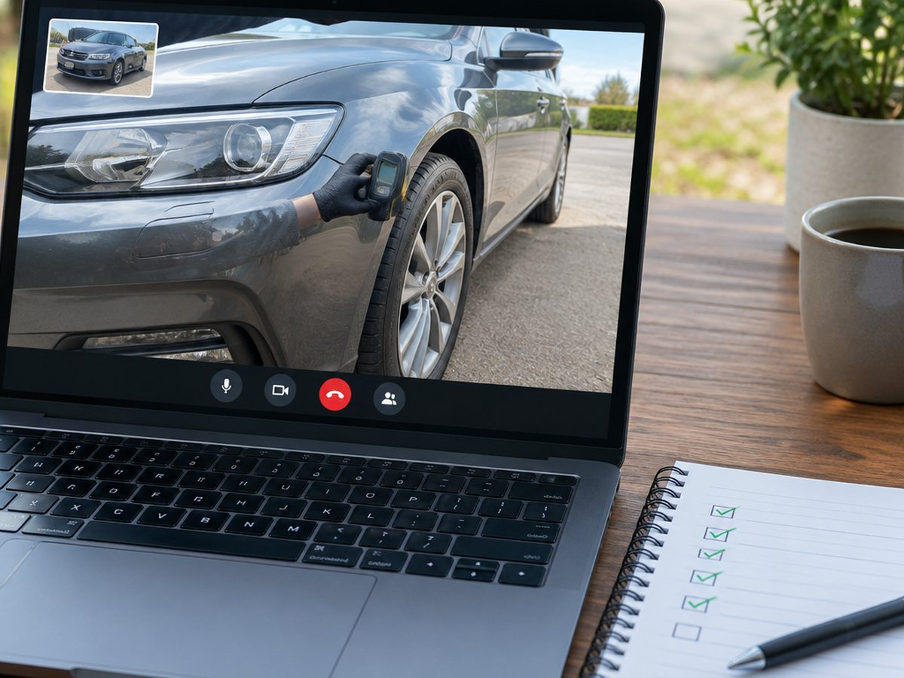

Замена масла
Расходники и работы на партнёрском СТО, если машине это нужно перед дорогой.

Гродно · Германия · с 2016 года
Осмотр с толщиномером и компьютерной диагностикой, торг с продавцом на немецком, покупка и доставка в Беларусь. Вы принимаете решение по протоколу, а не по фотографиям из объявления.
Что мы делаем
Мы не перепродаём машины. Работаем как ваша сторона в сделке: ищем, проверяем, торгуемся и довозим. Всё, что нашли, показываем в протоколе — с фото проблем, а не только с комплиментами.
Услуги
Отбираем варианты в Германии и соседних странах, отсеиваем по истории и состоянию — вы видите короткий список, а не поток ссылок.
Выезд партнёра к продавцу: толщиномер по панелям, компьютерная диагностика, тест-драйв, фото и видеоотчёт.
Переговоры с продавцом на немецком, согласование цены и условий, организация сделки с документами.
До границы или до Беларуси: вы знаете, где машина и что с ней происходит на каждом этапе.
Помощь в оформлении документов на автомобиль. Вопросы растаможки и учёта обсуждаем заранее.
Протокол осмотра
Каждый пункт — это либо «ок», либо замечание с ценой вопроса. Ниже раскрывается, что именно смотрим.
Все пункты протоколаПроверяем до выезда: число владельцев, записи о пробеге, сервисную историю и то, как машина продавалась раньше.
Кузов, зазоры, стёкла, фары, салон, следы ремонта и перекраса — на месте, при дневном свете.
Каждая панель по нескольким точкам. Заводская толщина обычно 90–160 мкм, 300 и выше — шпатлёвка или ремонт.
Читаем ошибки по всем блокам, смотрим пробег в электронных блоках и адаптации.
Партнёры в Германии
Партнёры закрывают то, что нужно машине до отправки: от замены масла до хранения, пока оформляются документы.
Расходники и работы на партнёрском СТО, если машине это нужно перед дорогой.
Сезонная резина или замена комплекта перед отправкой.
Расширенная проверка на подъёмнике и стенде, если базового осмотра мало.
Регламентная работа по охлаждающей системе.
Замена в автоматической или механической коробке по регламенту.
Стоянка и СТО в округе Бремена: машина может ждать документов или отправки.
Фото и честность
Осмотр нужен не для того, чтобы продать вам конкретную машину, а чтобы вы понимали, что покупаете. Если вариант плохой, в отчёте будет видно почему.
Как проходит осмотр
Как это выглядит
Сроки зависят от редкости машины и страны, но последовательность одна. На каждом этапе вы понимаете, что происходит и что нужно от вас.
Маршрут и доставкаОбсуждаем бюджет, марку, кузов, пробег и что для вас критично. Договариваемся, какую машину ищем и в каких странах смотрим.
Отбираем варианты в Германии и соседних странах, отсеиваем по истории и состоянию. Показываем вам 3–5 достойных, а не двадцать случайных.
Партнёр выезжает к продавцу: осмотр, толщиномер, диагностика, тест-драйв. Вы получаете протокол и фото с видео.
Ведём переговоры с продавцом на немецком, согласуем цену и условия, организуем сделку.
Машина едет до границы или до Беларуси. Вы знаете, где она находится, на каждом этапе.
Помогаем с оформлением документов на машину. Вопросы растаможки и постановки на учёт обсуждаем отдельно и заранее.
Частые вопросы
Если вашего вопроса тут нет, позвоните: отвечаем без скриптов.
+375 (33) 666-62-06Сделку организуем мы, но оплата идёт продавцу по договору купли-продажи. Мы согласуем цену, проверим документы и поможем с переводом. Как именно проходит оплата, обсуждаем на брифе: это зависит от продавца и страны.
Вы платите за работу по подбору, а не за факт покупки. Если вариант не прошёл осмотр, мы не уговариваем вас его брать, а показываем протокол и ищем дальше.
Стоимость зависит от страны, редкости машины и объёма работ: поиск, осмотр, торг, доставка. Фиксируем её в договоре до старта, без процентов от стоимости автомобиля, о которых вы узнаете потом.
Да, но обычно это дороже и дольше, чем выезд партнёра. Если вы в Европе и хотите приехать на осмотр лично, скажите заранее: согласуем время с продавцом.
Основное направление — Германия, но осмотр возможен и в других странах Европы. Логистика и хранение завязаны на округ Бремена, оттуда машины уходят в Беларусь.
Вы получаете копии договора купли-продажи, документов продавца и отчёт по каждому этапу. Все переговоры и платежи прозрачны и подтверждаются документами.
Заявка
Ответим вопросами, а не прайсом: что важно, какой бюджет, есть ли время ждать. Если направление не наше, скажем сразу.